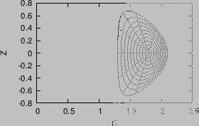

Next: Benchmark of the code Up: Special treatment at coordinate Previous: Boundary magnetic surface and
The tokamak equilibrium problem where the shape of the LCFS is given is called fixed boundary equilibrium problem. I wrote a numerical code that uses the iterative metric method[7] to solve this kind of equilibrium problem. Figure 30 describes the steps involved in the iterative metric method.


|